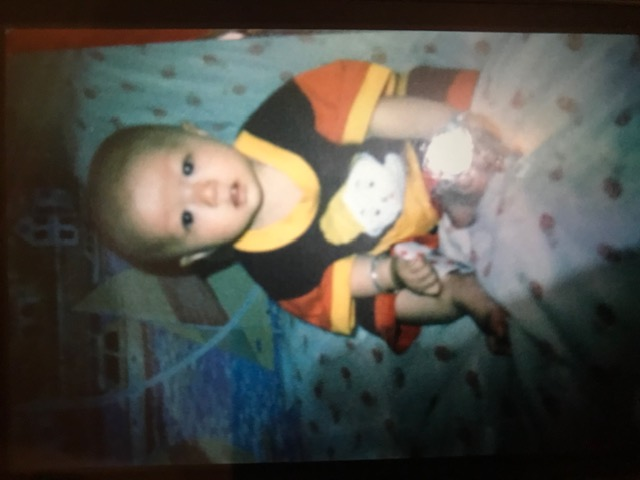

Jin Guo

personal information
Name: Jin Guo
Preferred in class: Andy
Student id: S3949564
Email: S3949564@student.rmit.com.au
I was born and raised in tonga, an island located to the east side of Australia, close to New zealand.
Tonga is a beautiful island surrounded with white beaches and coral reefs and covered with tropical rainforests.
Although I was born in tonga, both my parents are chinese therefore I am from the nationality of China.The language that we speak at home is Mandarine no matter whether our family was in tonga or australia,
as thats a way to remember home and where the root of ours are.
Although we are away from our home, China, we keep in touch with family and friends at home by phone calls every month.
I came to Australia at the age of 8 and studied grade 2, till now, studying information technology at rmit university.
I was interested in different things throughout different parts of my life for example, from the age of 10 basketball came into my interest.
I loved playing basketball because that was a way to get myself and my friends together.
I still love basketball to this day, I've played for several teams in my basketball career and won several awards including under 21s sabres champion and coaches awards.
From the interest of basketball, it then led to me loving sneakers as my friends and I loved to look at sneakers and research them.
Then in grade 9 that was the first time I realised that there is a market for sneakers, then that became a hobby of mine to buy and resell hype sneakers.
Before covid, myself and my friends would line up outside of stores the day before a sneaker would release.
This is done upon hundreds of others who are wanting to buy the sneakers, so in some cases if we were less fortunate we would come out empty handed, and we would've wasted 24 hours or more sitting under the cold,
but for most of the time we are able to get our hands on the sneaker and we are able to flip them for hundreds of profits.
Now during the pandemic, social gatherings are restricted so most of the stores would release sneakers online via raffle or FCFS(first come first serve).
That's when I realised the importance of technology and this is when I slowly started to learn about technology and the terms for example ip addresses and more.
_________________________________________________________________________________________________________________________________________________________________________________________
Interest In IT
IT came into my interest when I was addicted to video games in grade 6 and wanted to dig deep into the nuts and bolts of the mechanics of computer coding and game development. But as I grew older I realised the potential of IT and the effect it has on generations of ours and future generations and that I could take advantage of it in favour of my future business. My plan in the future is to open my own business. I have an addiction in sneaker collecting and reselling, so I might take this into consideration for my future business. I'm thinking of the potential idea of making a virtual sneaker reselling platform, where customers can use the technology of VR to virtually try on the shoes that they are looking to buy. My first time interacting with IT and sneakers was in 2020, that was when the pandemic hit Australia that forced sneaker retailers to have no choice but to release sneakers online. Retailers switched their release procedures to online raffles or FCFS (first come first served). It was in an instance where I would get my parent account to enter in a same raffle, which led to all of us being banned from the site, and I never won anything for a couple of weeks. And it was not until a good friend of mine, Roy, taught me about ip addresses where retailers are able to track my entries and know that it was this one person putting in all the entries. After fixing up this mistake, after a week I was able to hit on these raffles again and regress into reselling my sneakers. Then I became more fascinated about the world of it as the way he taught me was super interesting. And I've spent days researching the gist of technology. From then on, I had the dream to make sneaker reselling a career and what else can I do to maximise the potential of the success of my businesses? Is to incorporate two of the most trending components of the economy into one.
I chose to study at RMIT because of their worldwide ranking Computer Science & Information Systems of 98th globally (Top 100) for Best Global World University Rankings 2021. Furthermore, it was super convenient for me to attend the campuses as I can move to the cbd, and that's a few minutes walk to campus. What I expect during my studies is to learn the fundamentals and hopefully to mastering or to understand more than the basics of
of coding and website development, also a bit of VR if we get a chance and to.
_________________________________________________________________________________________________________________________________________________________________________________________
Ideal Job
Javascript web developer: Below is the job advertisement
link to the job advertisement
The position above is a web developer, responsible for development of online retail store websites. The most appealing thing to me in this business is their wages and advertised casual and friendly working environment and most importantly a flat hierarchy, where they have an organisational structure with few or no levels of middle management between staff and executives, as I don't like to be bossed around. And this can avoid problem of higher executive’s discriminatory treatments of the lower classes in the organisation. Furthermore, I can learn more about website development as I work, which can build great experience for my future business. The skills that I would need for this position is to be reliable, team-oriented, self-motivated, have excellent time management skills, and demonstrate strong attention to detail. The skills that I have from this list is that I am reliable,I always do what I say and always keep my promises, for team assignments I will alway do my work and won't let the team down. Self oriented and motivated, and have great time management skills, I keep all schedules and dates in my calendar to prevent myself from forgetting.
Experience with all of the following technologies is a requirement: JavaScript, NodeJS,
SQL databases,TML, CSS, git version control software. I haven't got any experience from any of the above softwares, but I'm currently learning SQL data and Github website development. I will learn more and more and gain experience for SQL data and Github website development through the course of my study at RMIT.
_________________________________________________________________________________________________________________________________________________________________________________________
Personality, Learning and Creative Test

Strength:
Receptive – Protagonists have strong opinions, but they’re far from closed-minded. They recognize the importance of allowing others to express themselves fully. Even when Protagonists don’t agree with someone, they recognize that person’s right to voice their truth.
Reliable – Few things bother Protagonists more than the prospect of letting down a person or cause that they believe in. People with this personality type can be counted on to see their promises and responsibilities through – even when it’s difficult to do so.
Passionate – Protagonists are far from being boring do-gooders. These types brim with interests, and they take great pleasure in pursuing their hobbies – whether that’s hiking, cooking, dancing, growing houseplants, or something else entirely. As a result, they rarely find themselves at a loss for something interesting to do.
Altruistic – These personalities are known for harbouring a deep desire to be a force for positive change. Protagonists genuinely believe that if they bring people together, they can do a world of good.
Charismatic – Determined and inspiring, Protagonists often find their way into leadership roles. Whether they’re captain of their softball team or a leader on the world stage, they rarely lose sight of their main goal: to be of service to others.
Weakness:
Unrealistic – Many Protagonists put pressure on themselves to right every wrong that they encounter. But no matter how hard these personalities strive, it just isn’t realistic for them to solve all of the world’s problems. If they aren’t careful, they can spread themselves too thin – and be left unable to help anyone.
Overly Idealistic – Protagonists tend to have clear ideas about what’s right and what’s wrong. They often think that everyone shares these fundamental principles – or, at least, that everyone should share these principles. So it can come as a genuine shock to Protagonists when people violate their core values, such as truth or justice.
Condescending – People with this personality type enjoy teaching others, particularly about the causes and beliefs that matter so much to them. But, at times, Protagonists’ attempts to “enlighten” others may come across as patronising – not the most effective strategy for persuading other people, unfortunately.
Intense – When it comes to self-improvement, Protagonists are rarely short on energy or determination. But they may not recognize that not everyone shares these qualities. At times, Protagonists may push others to make changes that they aren’t ready for – or simply aren’t interested in making in the first place.
Overly Empathetic – Compassion is among this personality type’s greatest strengths. But Protagonists have a tendency to take on other people’s problems as their own – a habit that can leave them emotionally and physically exhausted.